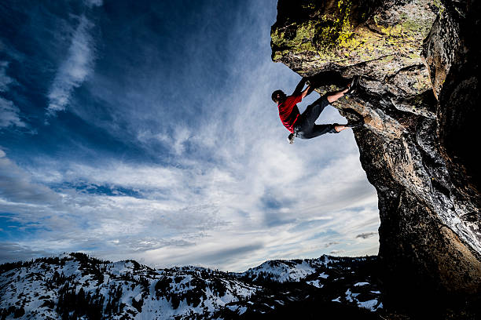
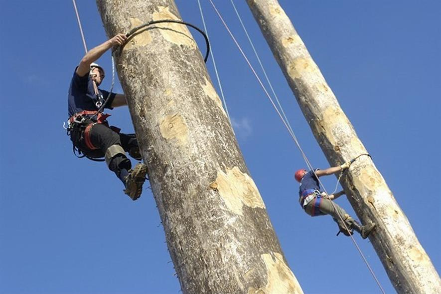

All rope-based activities take place on site with full safety equipment provided.

Climbing
Scale the highs of one of the local quarry slabs.
Max group size: 8
Ages 8+
Abseiling
Take the scary step and abseil from the top of one of the local quarry slabs. There is a lovely view... if you are brave enough to look down!
Max group size:8
Ages 8+

Pole Climb
Ever wondered how telephone engineers get to the top of the telephone poles? Well, here’s your chance to find out.
Max group size: 8
Ages 8+
"I was really scared about the abseiling but the instructor Mike was really encouraging and helped me do it, thanks Mike − Sophie, aged 10"